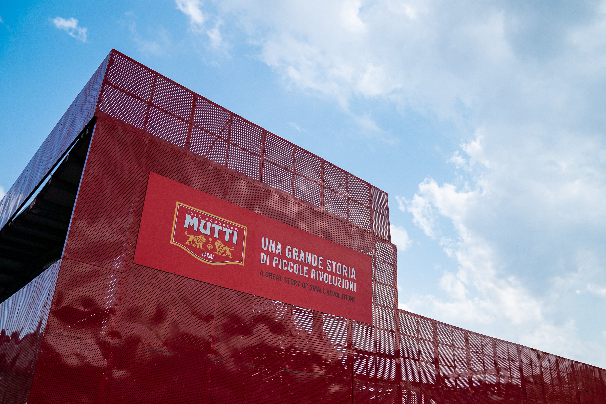
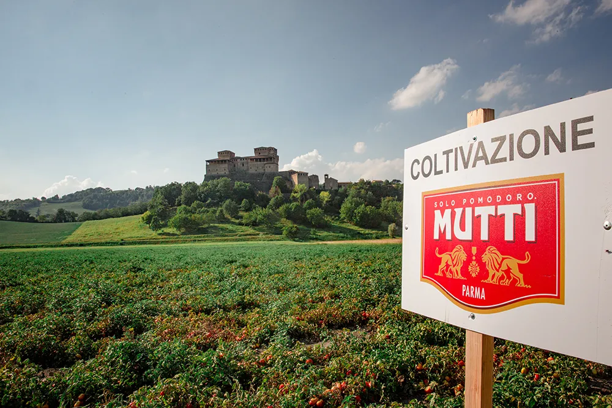
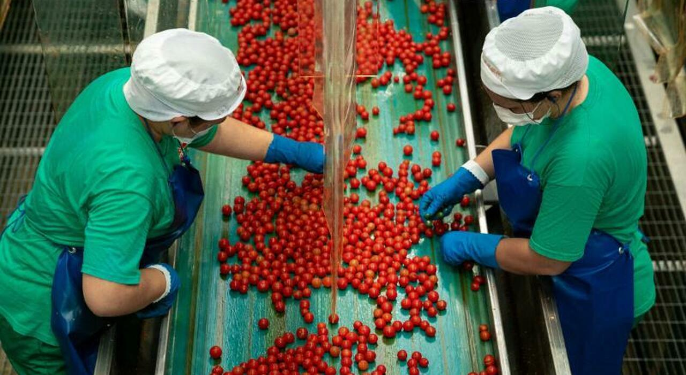
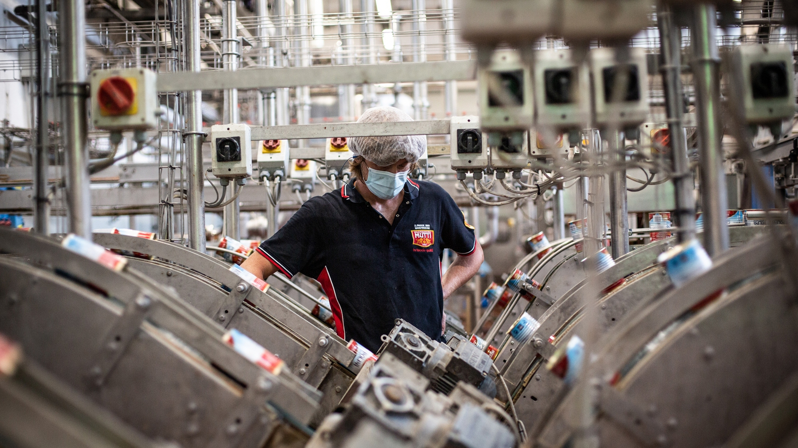
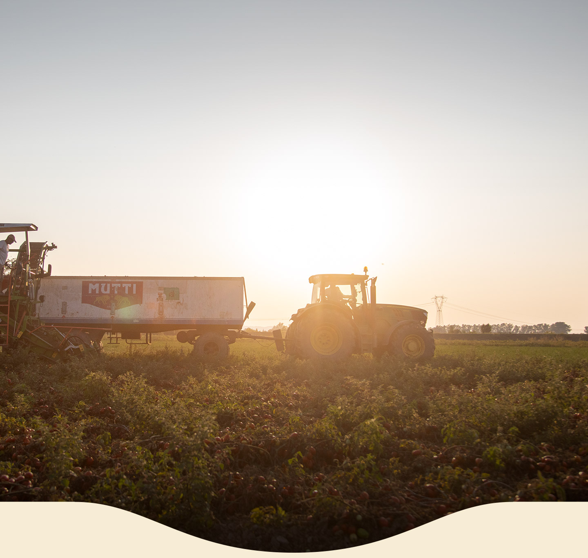

Mutti Industria Conserve Alimentari
Un'Eccellenza Italiana

🍅 LA NOSTRA STORIA
Da oltre 120 anni, nel cuore della campagna parmense, lavoriamo il pomodoro con un'unica grande ossessione: la qualità senza compromessi. Nati come piccola impresa familiare a Montechiarugolo, siamo cresciuti nel tempo scegliendo di evolverci in modo consapevole:
- 📍 Radici profonde: Manteniamo un legame viscerale con la nostra terra, unendo la tradizione agricola alla tecnologia più avanzata.
- 🔬 Rigore scientifico: Guidiamo la filiera del pomodoro verso un modello produttivo che riduce attivamente gli sprechi.
- 🌍 Rispetto per la natura: Tuteliamo le risorse idriche e proteggiamo la biodiversità in ogni fase della coltivazione.
- 🇮🇹 Eccellenza italiana: Ogni nostro prodotto fonde l'eccellenza del Made in Italy alla cura concreta per l'ambiente e per le persone.
LA NOSTRA STRATEGIA, I NOSTRI PILASTRI ESG

🌱 ASPETTO SOSTENIBILE
- 💧 Efficienza idrica: Riciclo dell'acqua per lo scarico del pomodoro e riduzione dei consumi grazie a tecnologie avanzate che hanno portato a un risparmio idrico medio del 9,5%.
- ☀️ Energia pulita: Produzione di circa 6.792 GJ di energia elettrica da impianti fotovoltaici e certificazione della Carbon Footprint di Organizzazione (ISO 14064-1).
- 🚚 Logistica sostenibile: Distanza media di soli 97 km dai campi di coltivazione, depositi a 10 km dagli stabilimenti, utilizzo di bio-LNG (-87% di emissioni).
- 🌿 Biodiversità e rinaturalizzazione: Ripristino di 15 ettari agricoli con oltre 1.100 alberi, 6.800 arbusti e 2.370 m di siepi per creare habitat naturali a Montechiarugolo.
- ♻️ Economia circolare e zero sprechi: Imballaggi riciclabili oltre il 99,5%, 88% di rifiuti avviati a riciclo/recupero e 100% dei sottoprodotti agricoli riutilizzati per biogas (20%) o alimentazione animale (80%).

🤝 ASPETTO SOCIALE
- 📚 Formazione: Organizzazione di percorsi di reskilling e upskilling focalizzati sulle competenze digitali e sulla transizione green per tutto il personale dipendente.
- 🎯 Coaching e leadership: Programmi di affiancamento aziendale mirati a sviluppare una gestione consapevole che integra la sostenibilità nelle decisioni strategiche.
- 💻 Smart working: Adozione di modelli di lavoro ibridi e flessibili per migliorare il benessere lavorativo e ridurre l'impatto degli spostamenti.
- ⚖️ DE&I: Promozione di politiche attive per garantire la parità di genere, l'equità salariale e l'inclusione a tutti i livelli dell'organizzazione.
- 🗣️ Ambiente partecipativo: Creazione di canali di ascolto e coinvolgimento dei dipendenti per raccogliere idee e favorire il benessere aziendale.
- 🎁 Donazioni: Cessione e recupero continuativo delle eccedenze alimentari a organizzazioni non profit per sostenere le comunità locali.
- 🌱 Educazione: Sviluppo di iniziative e campagne di sensibilizzazione destinate a dipendenti e comunità per promuovere consumi responsabili.

💼 ASPETTO ECONOMICO
- 🚀 Modello di business: Sviluppo di un modello innovativo, scalabile e resiliente per garantire la crescita economica nel lungo periodo.
- 📈 Sostenibilità e competitività: Integrazione della sostenibilità nei processi aziendali per rafforzare il posizionamento sul mercato.
- 📌 Dipartimento ESG: Presidio dedicato alla misurazione, al monitoraggio delle prestazioni e all'allineamento degli obiettivi strategici.
- 🏛️ Governance e trasparenza: Definizione di una governance chiara e di un sistema di rendicontazione strutturato per la massima trasparenza.
- 📜 B Corp e Società Benefit: Mantenimento dello status giuridico di Società Benefit e della certificazione B Corp a tutela del valore generato.
- ⚙️ Ottimizzazione processi: Efficientamento continuativo delle operazioni produttive per massimizzare la resa e ridurre i costi operativi.
- 🔄 Gestione della filiera: Controllo degli sprechi lungo l'intera catena del valore per ottimizzare l'uso delle risorse economiche e materiali.
🎯 IL NOSTRO IMPEGNO
Per il Gruppo Mutti la sostenibilità non è uno slogan, ma una responsabilità concreta che orienta ogni scelta strategica, dal campo fino alla tavola.
- 🌳 Ambiente e Natura: Tuteliamo rigorosamente le risorse idriche, riduciamo l'impronta carbonica e ripristiniamo l'equilibrio naturale dei territori in cui operiamo.
- 👩🌾 Persone e Comunità: Investiamo sul benessere dei lavoratori e sosteniamo la filiera agricola locale, perché il vero motore del cambiamento resta sempre il capitale umano.
- 🔍 Trasparenza e Responsabilità: Applichiamo un modello d'impresa chiaro, basato sull'economia circolare, per garantire un impatto positivo ad ambiente, comunità e consumatori.

📖🌱 Scarica il Report ESG Completo!
I numeri della nostra responsabilità sociale: accedi al Report di Sostenibilità integrale per analizzare dati, progetti e strategie che guidano il nostro impatto positivo sul territorio.
⬇️ Scarica Report ESG .PDF